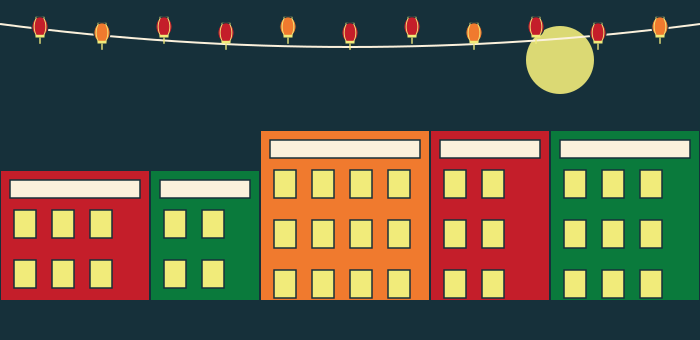
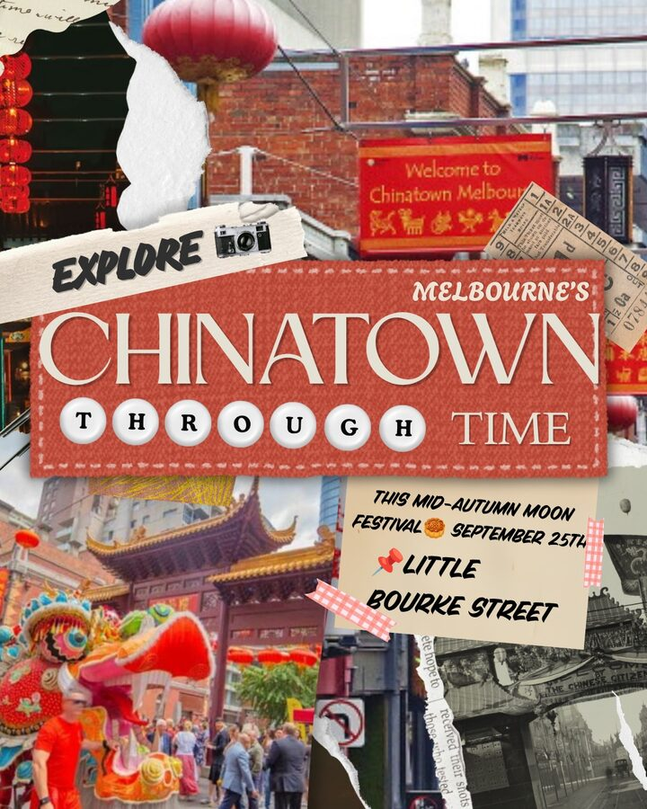
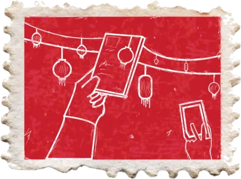
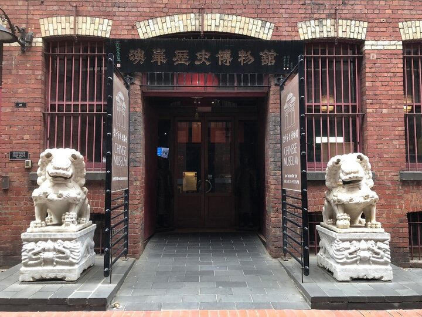
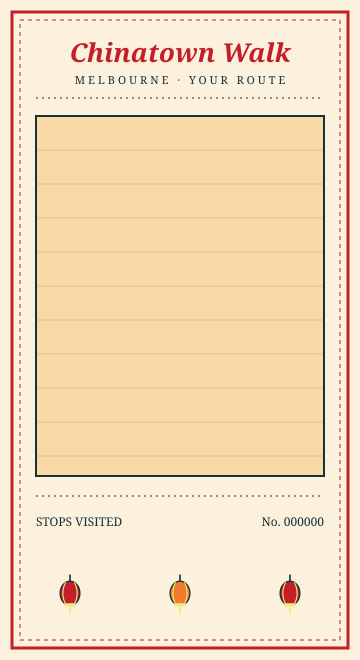

How much time do you have?
Quick Look · 2 min Full Story · 7 min
No account needed. Nothing is stored.
Chinese people have lived, worked and worshipped along Little Bourke Street since the gold rush of the 1850s. These eight stops each tell part of that story. Start anywhere and take as long as you like.
Start at the nearest stop Show me the mapTONIGHT · MID-AUTUMN

You can switch at any time. Neither one is the “real” version.
FIND IT
Opens in a new tab. We don’t track what you read.
Map data © Google · stop positions are approximate
Route is step-free and pram accessible.
TONIGHT · MID-AUTUMN
On Mid-Autumn night, pictures of Little Bourke Street through time are projected onto the Sum Kum Lee facade. Find a spot across the street and look up.
STARTS IN
ALSO ON TONIGHT

NEAREST STATIONS

YOUR WALK

Nothing was uploaded. This was made on your phone.
STILL WORKS
All 8 stops · text, images and audio were saved when you scanned the first marker.
NEEDS A CONNECTION
Source links · sharing